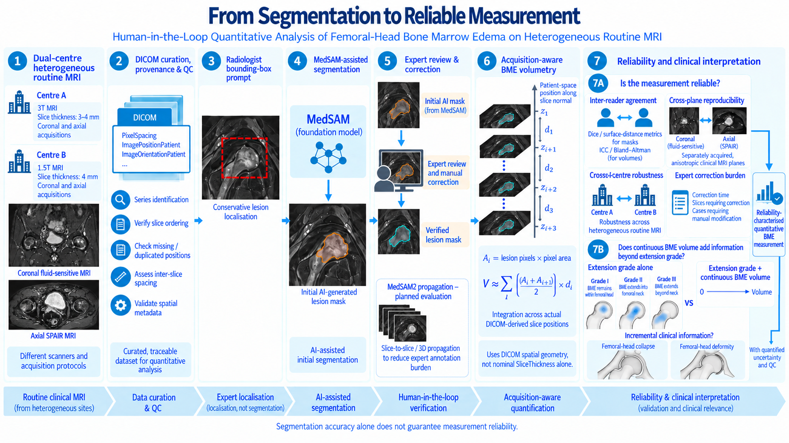

Clinical data engineering
I implemented DICOM curation, pseudonymous case labelling, acquisition-metadata extraction, series identification and target-series export. I also investigated clinical viewer references and DICOM slice alignment.
Clinical imaging · Human–AI collaboration
Quantitative analysis of femoral-head bone marrow edema on heterogeneous routine MRI
A dual-centre clinical research project combining radiologist collaboration, promptable segmentation and acquisition-aware measurement. The aim is to establish when a lesion measurement is reproducible enough to support clinical interpretation.
01 / Research question
Can foundation-model-assisted segmentation support reliable, clinically interpretable BME measurements from routine MRI?
Diffuse lesion boundaries, thick slices and protocol variation make this a measurement problem as well as a segmentation task. Quantitative BME analysis is established; my work connects clinical data curation, radiologist interaction and acquisition-aware measurement into a traceable workflow. [1] [2]
02 / Project overview

03 / My contributions
I implemented DICOM curation, pseudonymous case labelling, acquisition-metadata extraction, series identification and target-series export. I also investigated clinical viewer references and DICOM slice alignment.
I developed the Windows-compatible annotation workflow: multiple lesion boxes, structured exports, checkpoint/resume support and QC states, with practical guidance for collaborating radiologists.
I integrated MedSAM with prompt validation, saved masks and review summaries. I used expert feedback on incomplete and excessive masks to organise the developing review and correction workflow.
I am developing DICOM-aware volumetry and QC, and designing cross-plane reproducibility, cross-centre robustness and clinical incremental-information analyses around routine MRI limitations.
Radiologists retain responsibility for lesion localisation, clinical interpretation and mask verification.
04 / Project evolution
The slice-alignment investigation informed revised exports. Current local exporters still match reported frames to InstanceNumber; case-level agreement with the clinical viewer requires confirmation.
Greater acquisition heterogeneity. Some cases contributed to the initial pilot and protocol understanding.
Relatively more standardised acquisition. Both coronal and axial imaging support the measurement study.
The purpose is cross-centre robustness under heterogeneous routine imaging. Centre, scanner, protocol and patient-population effects are confounded. Complete radiology reports are available from both centres, although reporting style and structure differ across sites. The final eligible cohort count is still being reconciled.
05 / Human–AI workflow
Radiologists define the target. The model supplies an initial contour. Verification determines what can become a measurement.
Bounding boxes are localisation prompts. MedSAM supplies a candidate mask that requires radiologist review and correction before it can support quantitative measurement. [3]
Radiologist localisation → MedSAM initial mask → expert review → manual correction when needed → verified mask.
Radiologist annotation tool
I developed a Windows-compatible desktop tool and portable export packages for collaborating radiologists. The tool keeps the selected image, side and report-frame context with each annotation.
Cohort-scale radiologist annotation is underway. The connection from these exported-image prompts to reviewed masks and measurement is being consolidated.
06 / Physical-space quantification
A mask’s pixel count becomes an area through pixel spacing. A stack of areas becomes a volume through the geometry of the acquisition.
The pipeline already extracts DICOM geometry and estimates inter-slice distances. The developing volumetry method uses PixelSpacing, ImagePositionPatient and ImageOrientationPatient to retain that physical context through to the final estimate.

For consistently oriented parallel slices, neighbouring cross-sectional areas can be integrated over their actual separation. This avoids blindly multiplying by nominal SliceThickness. It still requires verified lesion coverage, a defined endpoint policy and explicit handling of gaps and partial-volume effects.
Technical components have undergone small-scale testing. Full-cohort physical volumes and measurement validation are not yet reported. Interpolated high-resolution images do not create new anatomical information or recover unobserved anatomy from thick slices.
Geometry extraction; projected spacing summaries; variable-spacing warnings; nominal thickness/spacing checks; metadata-completeness warnings; slice-order diagnostics.
Explicit duplicate/missing-position checks, all-slice orientation consistency, complete lesion coverage and rejection rules need to be consolidated and validated.
Measure on native image grids; merge overlapping prompts without double-counting. Use a consistent slice normal and verified full-lesion coverage, including neck extension where present. Do not bridge missing or unreviewed slices as though lesion extent were known; isolated report-selected frames are insufficient for whole-lesion volumetry.
07 / Reliability framework
Agreement in the derived measurement is the central endpoint. The planned evaluation separates reader variability, acquisition effects, cross-centre robustness and expert correction burden, with uncertainty reported alongside point estimates. [7] [8]
| Dimension | Question and evaluation | Status |
|---|---|---|
| ReaderInter-reader agreement | Two independent senior-radiologist reads on a predefined subset. Dice and normalised surface Dice for masks; ICC and Bland–Altman for volume; kappa for grade. Preserve independent readings before consensus. | Planned analysis |
| PlaneCoronal–axial reproducibility | Quantify matched lesions independently in each plane. Assess physical correspondence, then compare volumes with ICC, Bland–Altman and absolute/percentage differences. | Planned analysis |
| CentreCross-centre robustness | Develop and internally assess the protocol in the more standardised Centre B dataset, then assess a frozen workflow on held-out Centre A cases. Exclude development cases and disclose earlier pilot exposure. | Design only |
| WorkflowExpert correction burden | Record review/correction time and the proportion of slices requiring correction. A planned MedSAM2 propagation evaluation will test whether fewer prompts reduce total expert work while preserving agreement. [4] | Planned evaluation |
Cross-centre robustness remains a study design, not a completed result. Centre A contributed pilot cases and protocol understanding, so neither the site nor its entire dataset is described as untouched independent validation.
Coronal and axial thick-slice MRI differ in sampling, obliquity, motion and partial-volume effects. Physical correspondence, with rigid registration where justified, supports comparison without making them equivalent high-resolution scans. Any label transfer will use nearest-neighbour resampling; volumes remain measured on native grids.
08 / Clinical interpretation
The clinical comparator is an existing BME extension grade.
Within the femoral head.
Beyond the head, within the femoral neck.
Beyond the femoral neck.
These categories describe anatomical extent. A continuous volume could capture additional variation within the same grade. The study will test whether it adds interpretable information about concurrent femoral-head collapse or deformity. [6]
Existing categorical BME extension grade
Extension grade + continuous BME volume
The planned comparison uses the same eligible sample and appropriate covariate handling. Complete reports from both centres support this work, while differing report styles require transparent processing. Normalisation and laterality/frame parsing exist; structural-finding extraction, negation/uncertainty handling and manual verification of key findings remain planned.
“Not mentioned” will remain distinct from “explicitly absent” and “uncertain.” This is a cross-sectional question about incremental information, without a claim that BME volume causes collapse or predicts future outcomes.
09 / Current status
Current focus: scaling radiologist annotation and verified-mask generation across the eligible cohort.
Small-scale technical tests have been performed. The next stage is to carry completed cohort annotations through reviewed segmentation and quantitative analysis; formal reliability results are not yet available.
The project motivates reduced-prompt medical segmentation and multimodal analysis connecting images, acquisition metadata and clinical reports. Future models will be assessed through measurement fidelity and expert workload. Related musculoskeletal work also places quantitative biomarker fidelity alongside segmentation performance; our BME target and validation stage differ. [5]
Status reviewed September 2026. “Completed” describes the stated component or pilot, not full-cohort clinical validation.
10 / Limitations
11 / Selected references